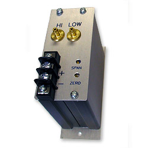

Draft Range Transmitter (CES 447)
Features:
- Senses draft range (i.e. low-flow) differential pressure between sources and outputs corresponding a current (i.e. mA) signal.
- Outputs a Current Signal (for voltage output applications check out the CES 450)
- Optional Flow Measurement (i.e. Integral Square Root Function).
- Full Scale (i.e. maximum pressure ranges) between 0.1 - 55.0" of H20
- Guaranteed Accurate within 0.75% of Full Scale
- Immune to EMI / RFI (i.e. electrical and radio intereference)
- Cost Effective
Example Applications:
- Any Application where Air or Gas flow needs to be precisely monitored.
- HVAC Systems - Flow Stations
- Laboratories & Clean Rooms - Air flow and pressure monitoring
- Pharmaceuticals - Fume hood airflow sensors
Description:
This draft range transmitter is perfect for any application which requires the precision measurement of differential pressure between air and other gasses. This instrument can be calibrated to provide Full Scale (i.e. maximum pressure) readings between 0.1 - 55.0" of H20. This device is loop powered and converts the differential pressure signal recieved from the air / gas sources into a 4-20 mA signal.
With normal use, this instrument is guaranteed to be accurate and repeatable even after 10 million readings, guaranteeing you years of faithful service at an affordable price.
Products Options:
- 0.25% Accuracy
- Volumetric Air Flow Measurement (i.e. cu ft. / min),
- Mass Flow Measurement (i.e. lbs. / min)
- LCD Display
Similar / Complimentary Products:
- Draft Range Transmitter (Voltage Output) - A cost effective Two wire (i.e. voltage output), Draft range Transmitters that sense pressure or (optionally) flow differences between two air/ gas or fluid sources.
- Auto-Zero Draft Range Transmitter - Auto-Zero transmitter, ideal for applications where accuracy and repeatability is critical (0.5-0.25% accuracy guaranteed). Perfect for remote or unattended applications.
- Auto-Zero Ultra-Low Draft Range Transmitter - Our top of the line transmitter and the ultimate in accuracy. Ideal for applications where accuracy and repeatability is critical (0.5-0.25% accuracy guaranteed). Measure pressures of 0.005 - 0.5" of H2O at full scale.